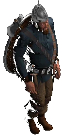

Князь
Земли Русской |
 |
|
В начале
этого года компания «1С» сначала объявила о
партнерском соглашении по созданию глобальной
стратегической серии вместе с московской
студией Snowball Interactive, а затем и обнародовала свои
дальнейшие планы по вступлению
на рынок компьютерных игр. Наше внимание привлек
проект, совсем недавно сменивший свое название с
«Легенд Лесной Страны» на «Князя». По заявлению
разработчиков, он станет первой российской RPG
игрой.
Главным программистом проекта является Дима
Жеребков, главным 3D-художником -- Женя Иноземцев,
главная 2D-художница -- Оля Рыбакова. Продюсер
проекта -- Александр Никитин, с которым мы и
беседуем. Еще несколько месяцев назад все члены
этой команды работали в составе NMG. Отсюда и
первая тема разговора:
|
| |
«Команда Никитина» + 1С = RPG |
| |
Мы
только что перечислили основных участников
команды «Князя». Давно ли вы работаете вместе и
чем ваша команда уже может гордиться?ко что
перечислили основных участников команды
«Кня-зя». Давно ли в
Вместе мы собрались еще в NMG, где я работал с конца
января 96-го --занимался организацией отдела
игровых и мультимедиа продуктов. Мы участвовали
в создании аж 7 мультимедиа дисков, а также
сделали недавно вышедший «Призрак Старого
Парка».
Как получилось, что вы перешли в «1С», и
почему именно в эту компанию?
В «1С» мы перешли в конце февраля этого года,
потому что нам хотелось чего-то большего, и мы
чувствовали, что в рамках NMG мы не сможем это
полностью реализовать. Мы сделали первый в
России квест, и нам не хотелось на этом
останавливаться. Стали искать или внешнего
издателя, который работал бы с нами как с
независимой командой, или издателя, который взял
бы нас в качестве in-house команды. Мы встретились с
«1С», обсудили наши и их планы, поговорили о
«будущем RPG в России» (смеется) и поняли, что можем
неплохо работать вместе. Получилось так, что «1С»
оказался оптимальным для нас вариантом и по
отношению к проекту, и по доступным ресурсам.
Ок, так чья же все таки была идея сделать
именно RPG, а не стратегию или еще один квест,
например?
Как такового прямого инициатора у этого проекта
не было. Мы просто сели вместе, обсудили
состояние рынка, наше горячее желание сделать
что-то новое, доступные в «1С» ресурсы, и пришли к
совместному решению создать первую в России
хорошую игру в стиле RPG, тем более что уже тогда
существовала идея сделать из нескольких
проектов нечто большее -- целую серию, которая
потом стала «Летописью Времен». Кстати, тогда наш
проект назывался «Легендами Лесной Страны», но
потом мы начали тесно сотрудничать со Snowball Interactive
-- именно их проект назывался в то время «Князем».
Название все время всплывало в разговорах и всей
нашей команде понравилось, поэтому когда мы
однажды зашли к Snowball на сайт и увидели, что они
колеблются между «Князем» и «Всеславом», --
уломали их отдать «Князя» нам. Теперь для полноты
картины им осталось подобрать оставшийся от Nival
«Moonseven» (смеется).
|
| |
Игра |
| |
Ладно,
с командой и названием все ясно. Давай теперь
поговорим о самой игре -- что-нибудь к
объявленному «жанр RPG, вид от третьего лица, три
четверти» добавить можешь?
Совсем немного (смеется). Это будет RPG c элементами
стратегии.
|

|
Чем «Князь» будет отличаться от других
проектов российских разработчиков? Какие-нибудь
глобальные идеи?
Как и «Всеслав», «Князь» в ориентирован
исключительно на российских игроков. То есть, с
самого начала мы его создаем на русском языке и
стараемся добавить такие детали, которые бы
понравились именно нашим, российским игрокам.
Вообще это будет первая RPG на русском языке.
Кстати, вы могли заметить, что и название у нас
тоже пока русское (смеется).
На что «Князь» будет
похож?
Проект можно сравнивать с Diablo. Только у нас
элементы RPG будут выражены более ярко, ведь Diablo --
это по сути дела просто action. У нас же будет
настоящая, подлиная RPG, с небольшими элементами
стратегии. В отличие от Diablo у нас будет более
насыщенная квестовая часть, при этом квесты не
будут обязательными для игрока. Просто решение
таких мини-квестов будет помогать в решении
стратегических задач игрока.
|

|
Ок,
теперь расскажи нам что-нибудь про персонажей
игры -- насколько они
будут индивидуальны? Кто у вас там будет?
У нас будут славяне, викинги и византийцы. Еще
будет немного традиционной русской нечисти.
Каждый игровой персонаж, каждый человек (или --
нечеловек) будет уникален, у него (или у нее) будет
свое имя. С каждым можно будет пообщаться на
произвольные темы, как, например, это реализовано
в седьмом Larry. Также у нас будет соблюден реальный
масштаб предметов, соотношение размера людей и
домов. Единственное исключение из этого правила
-- расстояние между деревнями, которое у нас
намного меньше реального. Иначе игроку пришлось
бы от одной деревни к другой идти часа два. На
предмет достоверности у нас даже есть свой
консультант по дизайну -- Генрих Талалян. Но пока
еще рано говорить о деталях реализации -- вперди
еще шесть месяцев работы (вздыхает). |
| |
Процесс |
| |
Хорошо,
о деталях потом расскажешь. А как идет сам
процесс разработки? В Diablo играете?
В Diablo мы как-то проиграли целую неделю напролет,
по сети. После этого поняли, что Diablo -- не самая
крутая игра, и в сети играть в нее неинтересно.
Единственное положительное свойство сетевой
игры -- возможность обмениваться артефактами. Мне
однажды за счет обмена удалось прокачать мага за
день до 30-го уровня. Говоря о магии: в нашем
распоряжении в «1С» две комнаты, одна вся белая, а
другая -- полностью черная. И когда кто-нибудь
усиленно «кодит» и входит в кому в процессе
поиска нужного решения, мы его отправляем в
противоположную комнату. Посмотреть на проблему
с другой стороны.
Методы работы понятны. Что оказалось при
работе над «Князем» самым сложным для ваших
художников?
Правдоподобная анимация персонажей, однозначно.
Чтобы все понормальному ходили, мечами махали
правильно. Кстати, у нас можно будет играть не
только за людей, но и за корову тоже (смеется). Нет,
я это абсолютно серьезно заявляю. Ведь корова --
очень полезное в таком типе игр существо.
Например, в сетевой игре один из ваших напарников
может за нее играть и служить разведчиком на
территории противника. Кто ж поймет, настоящая
это корова или лазутчик в стане врага?
|

|
| Ок.
А какие трудности у программистов? И вообще, что
вы ставите при разработке «Князя» на первое
место -- технологию, крутую графику или, как
говорит некто Х.М., -- играбельность?
Безусловно, играбельность у нас стоит на первом
месте. Мы много играли в Diablo и уверены, что сможем
сделать свою игру гораздо более интересной,
более затягивающей. Отсюда, кстати, и основная
проблема программистов -- математически описать
наш сложный сценарий оптимальным способом.
Ладно, с процессом более-менее ясно. Когда
«Князь» появится в «аптеках нашего города»?
«Князь» -- второй по счету проект в серии. Он будет
издан ближе к Новому Году, первым же изданным
проектом серии станет «Всеслав».
|
| |
Летопись Времен |
| |
А
что это вообще за серия? Раньше мы слышали только
о «глобальной стратегической серии «1С» и Snowball
Interactive». Как в нее вписывается ваша RPG?
Вся серия носит рабочее название «Летопись
Времен». Изначально она состояла из трех
стратегий, над которыми сейчас работает Snowball
Interactive, однако она задумывалась не просто как
«стратегическая серия», но как целая «концепция
мира». Ее основное преимущество -- возможность
развития такого мира в нескольких независимых
играх, возможность создать нечто большее, чем
одна конкретная игра. И поэтому когда мы в «1С»
окончательно утвердились в решении
разрабатывать RPG, мы подумали, что будет еще
лучше, если игра выйдет в рамках «Летописи».
Таким образом она осветит те стороны общей
концепции, до которых не доберутся стратегии
наших коллег из Snowball.
|

|
Последний
вопрос -- «Всеслав» готовят к выходу осенью, то
есть на несколько месяцев раньше «Князя». Как
будут связаны эти два проекта?
«Князь» выйдет уже после «Всеслава», однако по
внутренему времени события у нас
разворачиваются на несколько веков раньше.
Поэтому у игроков будет возможность узнать
предысторию вражды Всеслава и Драго,
поприсутствовать при легендарных битвах
викингов, подержаться за легендарные артефакты,
про которые они узнают из «Всеслава». Узнать
действующих лиц с другой стороны, что позволит им
лучше понять мотивацию за некоторыми событиями
во «Всеславе». Но об этом -- в следующий раз...
|
| Москва, июль 1997.
|
| Дизайнеры
Snowball Interactive будут несказанно благодарны всем, кто
найдет время прислать свои предложения
по «Всеславу» и «Меркурию-8». Команда «1С» также
ждет ваших предложений
по «Князю». |
| |
Text
and pictures are (c) 1997 by Snowball Interactive Entertainment, Inc. (c) 1997 by ИЧП
"Агарун Компани". All rights reserved. |